Reinforcement learning-based bucket filling for autonomous excavation
한줄 요약 — 토질에 따라 관입-회전과 관입-끌기를 스스로 바꾸는 4관절 속도 RL 정책에 깊이·pull-up·spillage 제약과 curriculum을 넣고, RRT 주행·굴착 자세·덤프·고도지도 갱신까지 연결해 12톤 실차가 7 m 트렌치의 완전 자율 시공과 반복 cycle을 수행하도록 했다.
1.연구 배경 및 동기
한 번의 버킷 채움을 넘어 토질 적응형 정책을 연속 토공 시스템으로 확장
버킷 채움은 굴착 자동화의 핵심이지만 토양 강도, 내부마찰, 수분, 매설 암석, 지표 경사에 따라 좋은 동작이 크게 달라진다. 부드러운 흙에서는 관입하면서 버킷을 빠르게 닫아 과충전할 수 있지만, 단단한 흙에서는 낮은 깊이에서 길게 끌어 절삭력을 유지해야 한다. 동시에 계획깊이를 넘지 않고, 장비 base를 흔들지 않으며, pull-up 영역과 self-collision을 피하고, 채운 토사를 흘리지 않아야 한다. 손으로 만든 단일 궤적은 이 다목적 절충과 미지 토질 적응을 모두 만족하기 어렵다.
기존 RL 굴착 연구는 단순 입자 시뮬레이션 또는 소형 장비, 단일 scoop 성공률에 집중하는 경우가 많았다. 정밀 DEM은 토양 상호작용을 잘 표현하지만 수천 병렬환경의 policy 학습에는 지나치게 무겁다. 반대로 저차 force model은 빠르지만 실제 지형 변화, 매설암, 유압 추종오차를 놓친다. 논문은 Fundamental Earthmoving Equation(FEE)에 기반한 빠른 토양력 모델과 절차적 RBF 지형을 Isaac Gym에 넣고, 토질·지형·깊이제약을 넓게 무작위화한다. 그 다음 정책을 독립 scoop에만 두지 않고 위치선정, 굴착, 운반, 덤프, 고도지도 갱신의 전체 trench workflow에 삽입한다.
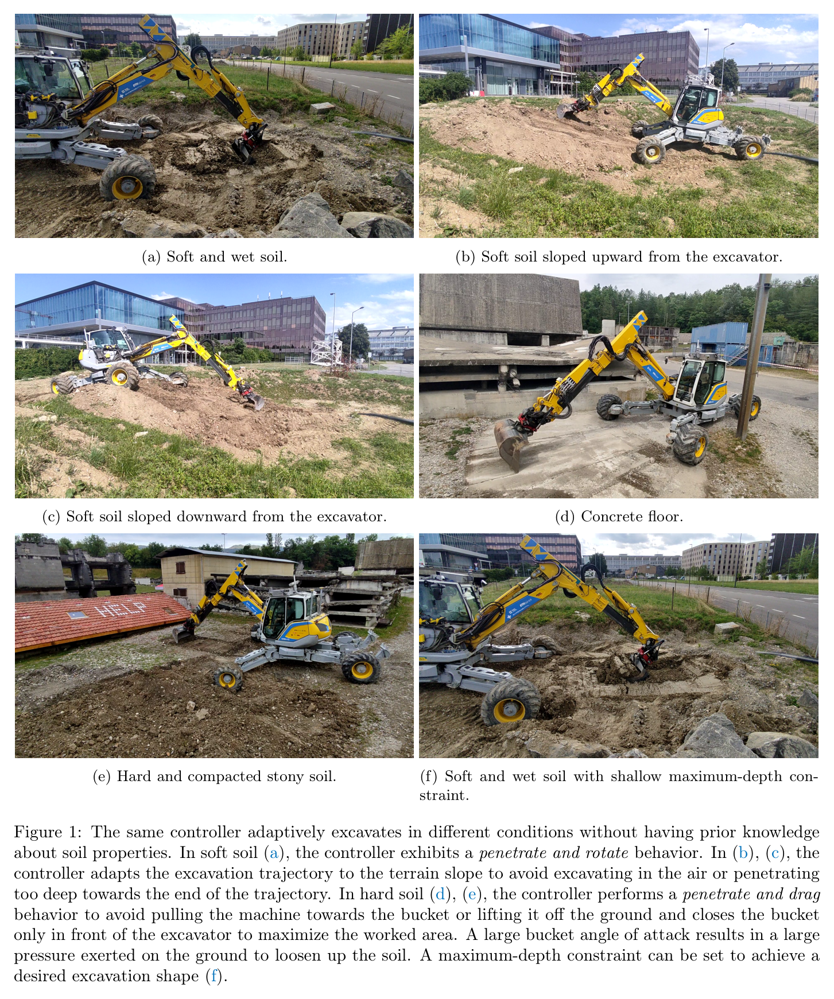
원문 Figure 1 · PDF p.3 — Figure 1: The same controller adaptively excavates in different conditions without having prior knowledge about soil properties. In soft soil (a), the controller exhibits a penetrate and rotate behavior. In (b), (c), the controller adapts the excavation trajectory to the terrain slope to avoid excavating in the air or penetrating too deep towards the end of the trajectory. In hard soil (d), (e), the controller performs a penetrate and drag behavior to avoid pulling the machine towards the bucket or lifting it off the ground and closes the bucket only in front of the excavator to maximize the worked area. A large bucket angle of attack results in a large pressure exerted on the ground to loosen up the soil. A maximum-depth constraint can be set to achieve a desired excavation shape (f).
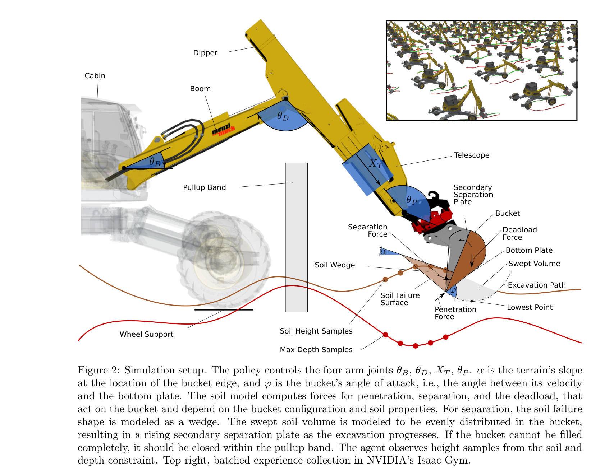
원문 Figure 2 · PDF p.8 — Figure 2: Simulation setup. The policy controls the four arm joints θB, θD, XT , θP . α is the terrain’s slope at the location of the bucket edge, and φ is the bucket’s angle of attack, i.e., the angle between its velocity and the bottom plate. The soil model computes forces for penetration, separation, and the deadload, that act on the bucket and depend on the bucket configuration and soil properties. For separation, the soil failure shape is modeled as a wedge. The swept soil volume is modeled to be evenly distributed in the bucket, resulting in a rising secondary separation plate as the excavation progresses. If the bucket cannot be filled completely, it should be closed within the pullup band. The agent observes height samples from the soil and depth constraint. Top right, batched experience collection in NVIDIA’s Isaac Gym.
선행 연구의 한계
고정 궤적과 규칙 기반 bucket filling은 토질과 경사 변화에 따라 관입·끌기·닫기 전략을 능동적으로 바꾸기 어렵다.
DEM 같은 고정밀 토양 시뮬레이션은 대규모 병렬 RL에 필요한 속도를 제공하기 어렵고 실측 파라미터도 많이 요구한다.
단일 scoop 평가만으로는 다음 굴착 위치, 장비 이동, 덤프, 지도 갱신, 종료판정이 얽힌 실제 trench 생산성을 알 수 없다.
simulator가 토사 이동·매설 암석·유압 tracking delay를 생략하면 실기체에서 fill estimate와 깊이 제약이 달라질 수 있다.
이 연구의 기여
FEE 기반 고속 soil force, 절차적 RBF 지형, soil parameter randomization, max-depth surface를 결합한 Isaac Gym 굴착 학습환경을 구축한다.
41차원 관측에서 4개 arm joint velocity를 출력하고, fill·깊이·pull-up·AoA·base motion·spillage를 함께 다루는 PPO 정책과 curriculum을 설계한다.
soft/hard soil, pull-up obstacle, max-depth constraint의 실차 단일 scoop 실험으로 행동 적응과 sim-to-real 차이를 분석한다.
전역 trench geometry, 국소 digging pose, RRT 이동, 덤프, 1 Hz elevation-map update를 연결해 7 m trench를 완전 자율 굴착하고 숙련 작업자와 비교한다.
2.방법론 및 시스템 구성
Isaac Gym에는 HEAP의 floating-base serial kinematic model을 구성하되 cabin과 legs를 고정하고 네 개 arm joint만 velocity action으로 제어한다. 지면 마찰계수는 0.8이다. bucket-soil interaction은 Park 계열 FEE의 separation과 penetration 힘을 조합하며, bucket angle of attack에 따른 cosine scaling으로 여러 저항 메커니즘을 중첩한다. 선행 실험에서 약 20% force accuracy로 보고된 모델을 택해 DEM보다 빠른 병렬 학습을 우선한다.
정책 관측은 관절상태·토크, 버킷 상태, 토양 및 max-depth를 따라 20 cm 간격으로 샘플한 높이 등 총 41개이고 action은 네 관절 속도다. 보상은 full bucket +10, partial bucket +5의 terminal reward와 단계별 filling, power, depth tracking, closing, smoothness로 구성한다. 0.75 m/s 초과 버킷 속도, 토중 음의 AoA, 0.1 m/s 초과 base motion, max-depth 5 cm 초과, pull-up 위반, spillage, 빈 버킷의 과도한 상승, self-collision에는 -1 terminal penalty를 준다.
학습 후 LiDAR elevation map과 설계가 digging pose를 정하고 RL이 arm contact motion을 실행한다. 0.1 m grid를 1 Hz로 갱신하고 버킷 폐색은 궤적 적분으로 보정한다. RRT/pure pursuit 이동과 규칙 기반 dump를 연결해 local cell 90%가 threshold 아래일 때 다음 위치로 이동한다.
처리 파이프라인
1
고속 FEE 기반 학습환경
Park 토양모델의 separation·penetration 저항을 bucket geometry와 AoA로 계산하고 다양한 cohesion, unit weight, friction angle을 샘플링한다. RBF 지형, base pitch ±5도, pull-up 영역 2~3.5 m, bucket 시작높이와 max-depth를 함께 바꾼다.
2
constraint-aware PPO와 curriculum
41 observations에서 4 joint velocities를 출력한다. full/partial fill과 연속 filling 보상에 power·smoothness·closing을 더하고, 과속·음의 AoA·base motion·깊이 초과·pull-up·spillage·self-collision을 terminal penalty로 만든다. 성공률에 따라 terrain roughness, fill threshold, terminal height, closing, pull-up band를 점진적으로 어렵게 한다.
3
실차 저수준 추종
각 link Leica IMU와 양쪽 cylinder pressure로 관절각·속도·토크를 얻는다. 전기식 pilot retrofit 위에 13-point feedforward LUT와 PID를 100 Hz로 구동한다. 실제 유압 bandwidth는 약 0.5 Hz이므로 simulation보다 느린 tracking을 policy가 견뎌야 한다.
4
전역·국소 작업계획 통합
설계 trench와 현재 elevation map으로 다음 digging location과 30도 PoA를 고르고, bucket orientation 0.6 rad를 유지해 접근한다. local workspace가 충분히 완성될 때까지 반복 scoop 후 RRT/pure-pursuit로 다음 pose 또는 dump location으로 이동한다.
5
폐루프 지형 갱신과 종료
LiDAR와 bucket swept path를 이용해 1 Hz 2.5D map을 보정한다. 국소 cell의 90% 이상이 목표 threshold 아래이면 local 작업을 종료하고, 전역 trench 끝까지 같은 cycle을 반복한다.
원문 수식과 의미
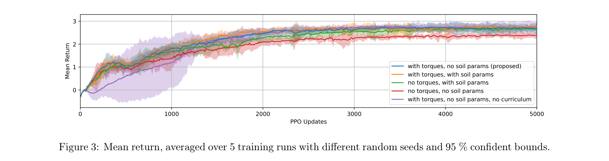
원문 Figure 3 · PDF p.13 — Figure 3: Mean return, averaged over 5 training runs with different random seeds and 95 % confident bounds.
3.핵심 기술
토질 적응을 유도하는 force-aware observation
정책은 soil class label을 직접 받지 않지만 관절 토크와 버킷 진행 중 반응을 통해 단단함을 추론한다. ablation에서 torque를 제거하면 soil observation이 있어도 성능 변화가 작고, torque와 soil을 모두 제거했을 때 평균 굴착깊이가 크게 붕괴한다. 실제 soft soil에서는 짧게 관입하며 회전해 채우고 hard soil에서는 큰 AoA와 drag를 선택하는 행동차가 나타났다.
관측 41개, action 4개이며 지형·깊이 표면은 20 cm 간격 5점씩 샘플한다.
torque+soil 구성의 평균 return은 2.74, 평균 깊이는 28.0 cm다.
torque와 soil을 모두 제거하면 return 2.38, 깊이 5.0 cm로 떨어진다.
제약을 terminal event로 명확히 만든 보상 설계
fill만 보상하면 빠르게 깊게 파거나 장비를 흔들어 적재량을 늘리는 우회행동이 생길 수 있다. 논문은 max-depth 5 cm 초과, pull-up 접촉, spillage, base velocity, 비정상 AoA와 self-collision을 terminal penalty로 처리한다. 이산적 성공조건과 연속 reward shaping을 함께 써 정책이 안전영역 안에서 채움 전략을 탐색하도록 한다.
full bucket terminal reward는 +10, partial bucket은 +5다.
버킷 속도 0.75 m/s, base 속도 0.1 m/s, 깊이 초과 5 cm가 핵심 안전 임계값이다.
curriculum 난도는 성공조건에 따라 1/250씩 증가하며 약 500 iteration 부근에서 최대 난도에 도달한다.
단일 scoop 정책의 현장 생산시스템화
RL이 잘하는 soil-contact arm motion과 기하·검색이 안정적인 base navigation, digging pose, dump motion을 분업한다. 2.5D elevation map을 공통상태로 사용하고, local completion threshold Θ를 바꾸어 정밀도와 생산성의 절충을 조절한다. 이 구조 덕분에 동일 policy를 반복 호출해 7 m trench 전체를 완성하고 사람과 cycle 수준 비교가 가능해졌다.
지도 해상도는 0.1 m, update는 1 Hz다.
trench는 길이 7 m, 목표깊이 0.75 m다.
completion threshold Θ는 5, 10, 15 cm 조건으로 비교한다.
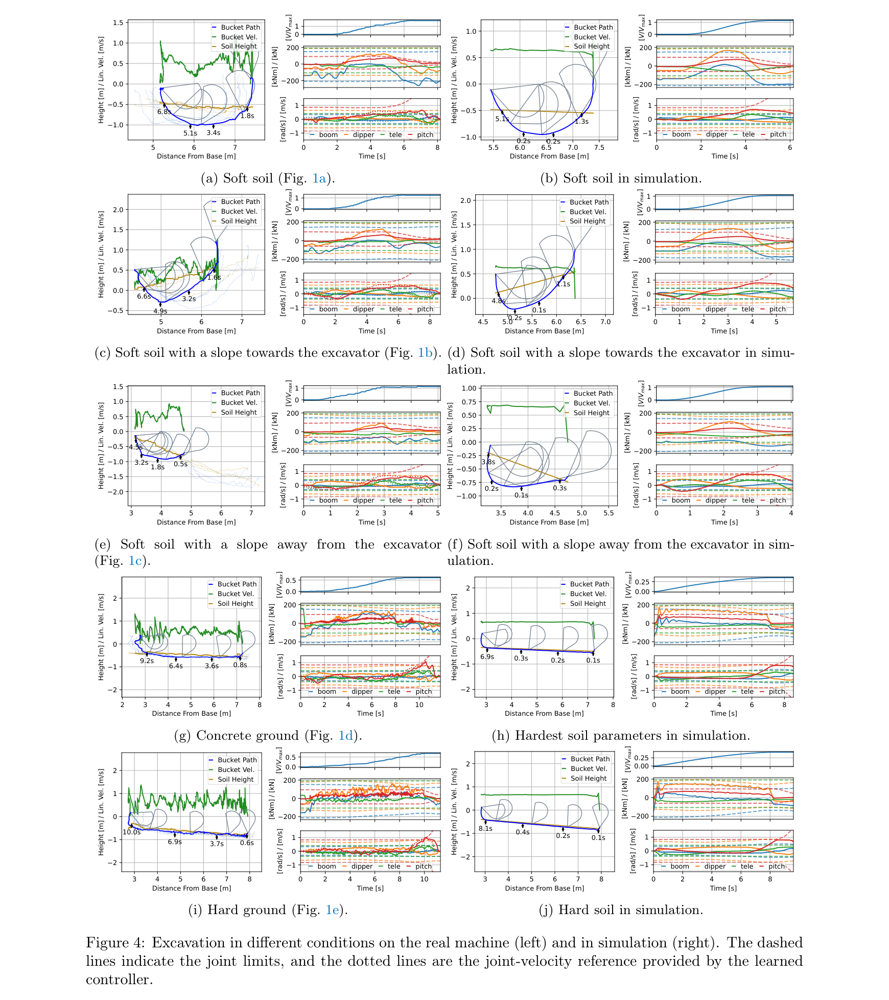
원문 Figure 4 · PDF p.17 — Figure 4: Excavation in different conditions on the real machine (left) and in simulation (right). The dashed lines indicate the joint limits, and the dotted lines are the joint-velocity reference provided by the learned controller.
4.실험 결과
실험 환경·장비·데이터
학습은 RTX 3090 GPU, 약 5.5 GB 메모리에서 5000 iterations, 약 3.5시간 수행한다. PPO network는 128×128 hidden layers다.
실차는 약 12톤 HEAP M545, link별 Leica IMU, cylinder 양측 pressure, roof LiDAR, 전기식 pilot valve retrofit을 사용한다.
저수준 arm controller는 13-point feedforward LUT+PID를 100 Hz로 실행하며 유압 응답 bandwidth는 약 0.5 Hz다.
최종 비교 대상은 7년 이상 경력의 현장감독 겸 숙련 굴착기 작업자다.
실험 프로토콜
정책 ablation은 torque/soil observation의 네 조합을 5 random seeds로 학습하고 약 12,500 episodes에서 깊이 통계를 계산한다.
실차 단일 scoop는 soft soil, hard stony soil, pull-up obstacle, max-depth constraint에서 각 5회 연속 시도하며 simulation 행동과 비교한다.
연속 trench는 Θ=5·10·15 cm 세 설정과 수동 작업을 비교하고 총시간, scoop 수, cycle breakdown, volume, 정밀도를 기록한다.
완료 뒤 Leica/측량 기반 reference와 elevation map을 비교해 평균절대오차 및 표준편차를 산출한다.
비교 기준
torque/soil observation 포함 여부에 따른 네 가지 PPO ablation
simulation과 실제 soft/hard/pull-up/max-depth 조건
자동 trench Θ=5 cm, 10 cm, 15 cm
7년 이상 경력 숙련 작업자의 수동 굴착
평가 지표
policy return, 평균 penetration depth, bucket fill percentage와 표준편차
max-depth overshoot, pull-up violation
총 작업시간, 평균 cycle time, scoop 수, 제거체적, 굴착·덤프·주행 단계시간
m³/h 생산성, 목표면 평균절대오차와 표준편차
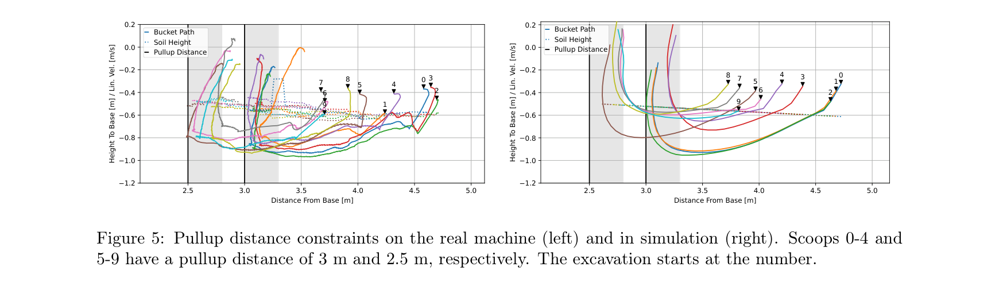
원문 Figure 5 · PDF p.18 — Figure 5: Pullup distance constraints on the real machine (left) and in simulation (right). Scoops 0-4 and 5-9 have a pullup distance of 3 m and 2.5 m, respectively. The excavation starts at the number.
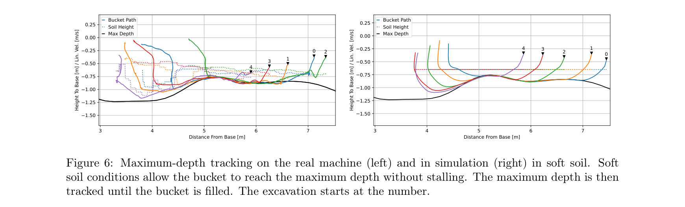
원문 Figure 6 · PDF p.18 — Figure 6: Maximum-depth tracking on the real machine (left) and in simulation (right) in soft soil. Soft soil conditions allow the bucket to reach the maximum depth without stalling. The maximum depth is then tracked until the bucket is filled. The excavation starts at the number.
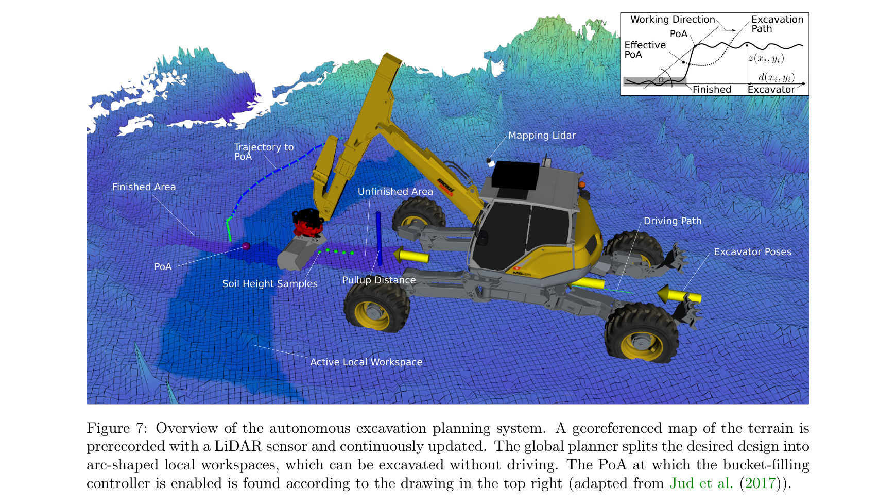
원문 Figure 7 · PDF p.19 — Figure 7: Overview of the autonomous excavation planning system. A georeferenced map of the terrain is prerecorded with a LiDAR sensor and continuously updated. The global planner splits the desired design into arc-shaped local workspaces, which can be excavated without driving. The PoA at which the bucket-filling controller is enabled is found according to the drawing in the top right (adapted from Jud et al. (2017)).
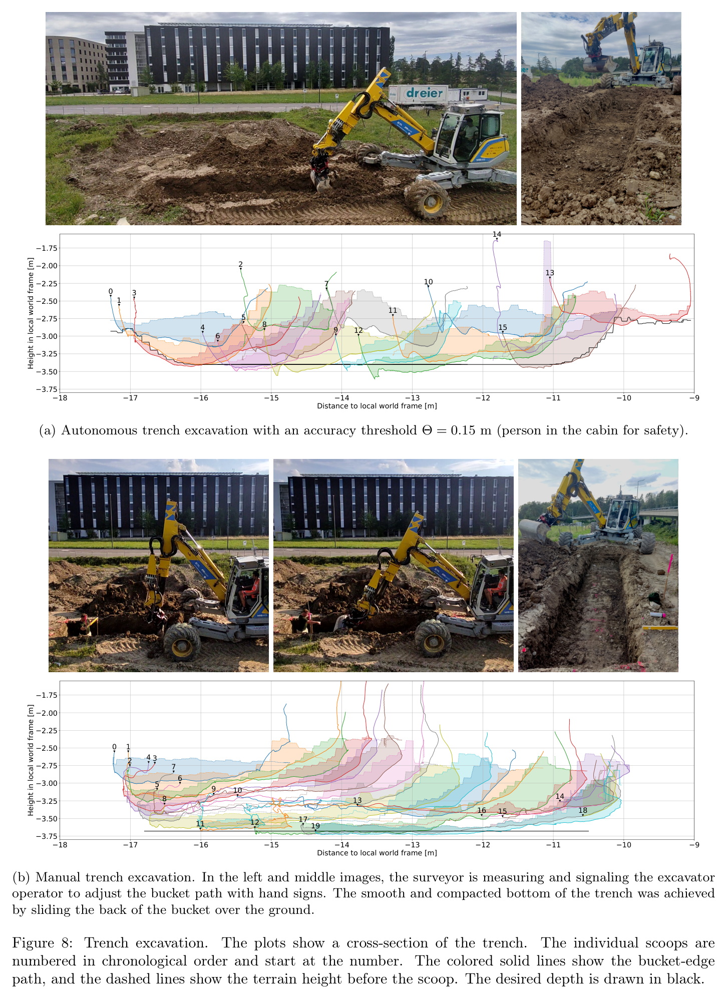
원문 Figure 8 · PDF p.21 — Figure 8: Trench excavation. The plots show a cross-section of the trench. The individual scoops are numbered in chronological order and start at the number. The colored solid lines show the bucket-edge path, and the dashed lines show the terrain height before the scoop. The desired depth is drawn in black.
핵심 결과 해석
simulation ablation은 토크 관측의 중요성을 보여준다. torque+soil은 return 2.74와 깊이 28.0 cm, torque만은 2.70과 27.4 cm, soil만은 2.66과 28.1 cm였지만 둘 다 없으면 return 2.38과 깊이 5.0 cm로 떨어졌다. 실차에서 soft soil은 관입-회전으로 완전히 채우거나 과충전했고 hard soil은 더 긴 drag와 큰 AoA를 택했지만 돌 때문에 채움이 덜 됐다. hard-soil 저주파 진동은 simulation에 없었다.
7 m trench에서 Θ=15 cm 자동 운전은 16 scoops, 9.3분, 8.4 m³로 가장 빠른 자동 설정이었고 평균 cycle은 32.4초였다. Θ=5 cm는 25 scoops와 15.03분, Θ=10 cm는 19 scoops와 11.43분이었다. 수동은 20 scoops, 11.57분, 11.5 m³와 평균 cycle 28.8초였다. 자동 pure excavation 단계는 scoop당 6.8~7.7초로 사람 14.7초보다 빠르지만, dump가 약 16초로 사람 5.6초보다 느려 전체 cycle 이점을 상쇄했다.
자동 Θ=15 cm 생산성은 54.5 m³/h이고 사람은 측량 포함 59.7, 제외 65.4 m³/h였다. 형상 평균절대오차는 자동 약 6~7 cm, 사람 5 cm이며 자동 fill estimate는 약 55% 과대평가됐다. 즉 빠른 RL 굴착보다 dump·navigation·잔량 추정이 전체 생산성을 제한한다.
정량 결과
평가 항목
정량 결과
조건·맥락
원문 근거
관측 ablation
torque+soil return 2.74/depth 28.0 cm; neither 2.38/5.0 cm
5 seeds, 약 12,500 episodes 깊이 평가
PDF p.13
pull-up fill
실차 76%±19%, simulation 39%±36%
pull-up constraint 시나리오
PDF p.16
max-depth overshoot
simulation 2 cm, 실차 5 cm
설정한 최대 굴착면 위반량
PDF p.16
Θ=15 cm 자동 trench
9.3 min, 16 scoops, 8.4 m³, 32.4 s/cycle
길이 7 m, 깊이 0.75 m trench
PDF p.22
수동 trench
11.57 min, 20 scoops, 11.5 m³, 28.8 s/cycle
7년 이상 경력 작업자
PDF p.22
굴착 단계시간
자동 6.8 s vs 수동 14.7 s
Θ=15 cm 자동 조건과 수동의 scoop당 excavation
PDF p.22
생산성
자동 54.5 m³/h vs 수동 59.7 m³/h
수동은 측량시간 포함, 제외 시 65.4 m³/h
PDF p.23
마무리 정밀도
자동 약 6~7 cm, 수동 5±3 cm
목표 trench surface 평균절대오차 및 수동 표준편차
PDF p.23
실패 사례와 경계조건
hard stony soil의 매설암은 모델에 없고 실차에서 저주파 진동과 불완전 채움을 유발했다.
학습 simulator는 굴착 후 지형 변화와 버킷 밖으로 밀려난 토사를 반영하지 않아 연속 scoop 상태가 실제와 달라진다.
pull-up 실차 5회 중 한 번 경계를 약간 침범했고 max-depth overshoot도 simulation보다 컸다.
버킷 궤적 적분은 실제 fill을 약 55% 과대평가해 잔여토량과 종료판정을 왜곡한다.
전체 생산성은 느린 규칙 기반 dump와 주행 단계 때문에 RL 굴착속도의 이점을 충분히 살리지 못했다.
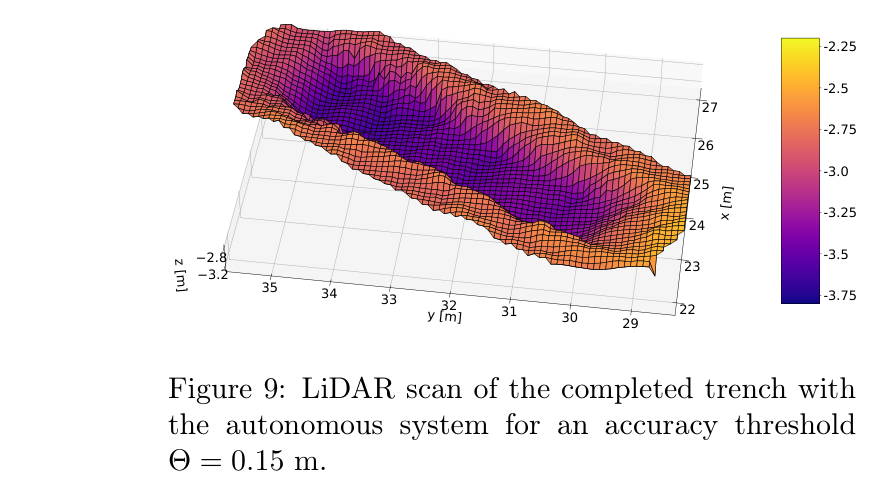
원문 Figure 9 · PDF p.22 — Figure 9: LiDAR scan of the completed trench with the autonomous system for an accuracy threshold Θ = 0.15 m.
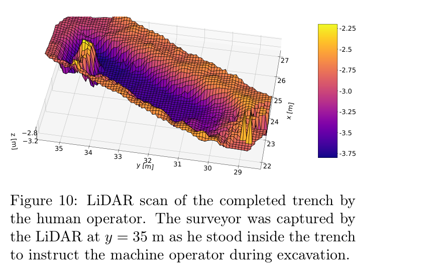
원문 Figure 10 · PDF p.22 — Figure 10: LiDAR scan of the completed trench by the human operator. The surveyor was captured by the LiDAR at y = 35 m as he stood inside the trench to instruct the machine operator during excavation.
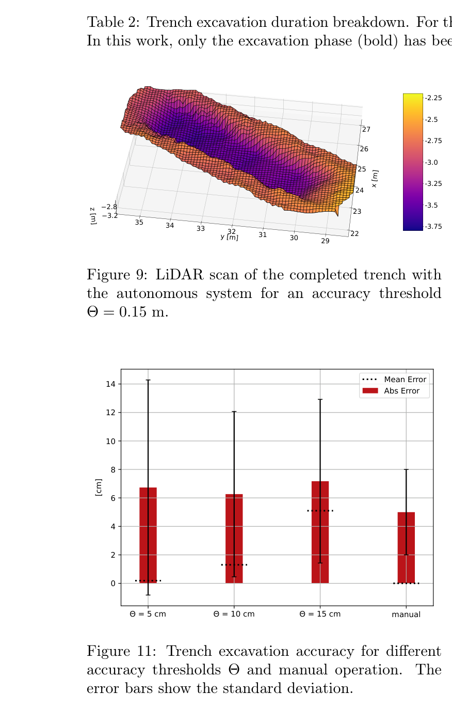
원문 Figure 11 · PDF p.22 — Figure 11: Trench excavation accuracy for different accuracy thresholds Θ and manual operation. The error bars show the standard deviation.
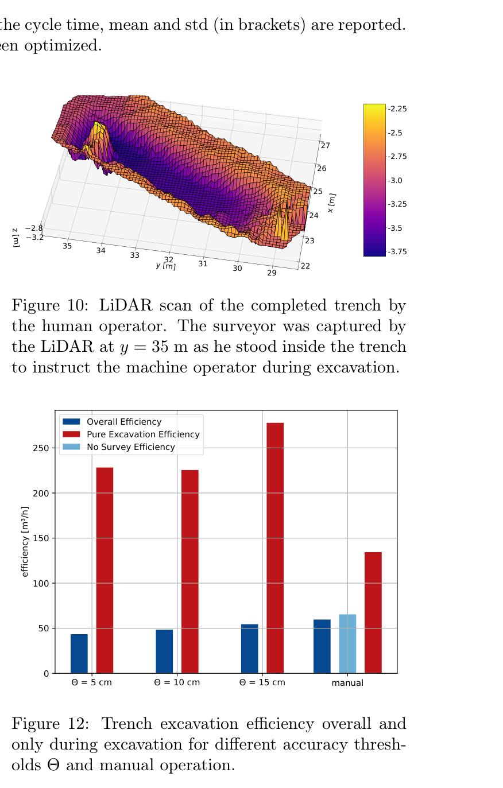
원문 Figure 12 · PDF p.22 — Figure 12: Trench excavation efficiency overall and only during excavation for different accuracy thresh- olds Θ and manual operation.
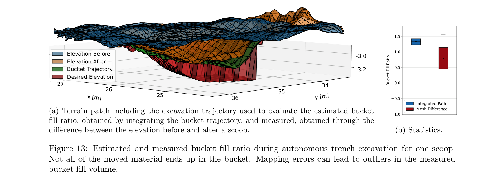
원문 Figure 13 · PDF p.24 — Figure 13: Estimated and measured bucket fill ratio during autonomous trench excavation for one scoop. Not all of the moved material ends up in the bucket. Mapping errors can lead to outliers in the measured bucket fill volume.
5.한계 및 향후 연구
현재 한계
FEE simulator에 discrete rock, 토질 불균질, pushed soil, compaction, 굴착 후 terrain update가 없다.
유압 tracking dynamics와 센서 noise/delay가 학습환경에 충분히 반영되지 않아 depth·pull-up constraint의 sim-to-real gap이 남는다.
spillage 모델이 버킷 자세 하나로 전량 유실을 결정하고 swept volume이 전부 적재된다는 가정은 fill estimation을 과도하게 단순화한다.
마무리 grading과 dump trajectory는 학습되지 않은 규칙 기반이며 전체 작업 throughput의 병목이다.
향후 연구
실제 토양·매설암 분포와 굴착 후 지형변형, 버킷 밖으로 밀린 토사를 학습 simulator에 추가한다.
실차 tracking delay, hydraulic bandwidth, sensor noise를 randomization하고 pressure 기반 실제 fill/load estimator를 학습한다.
bucket filling, dump, grading을 하나의 장기 policy 또는 hierarchical policy로 연결해 전체 cycle time을 직접 최적화한다.
마무리 단계의 작은 잔량과 정밀도 보상을 강화하고 다양한 현장·계절·버킷 형상에서 장기 반복 시험한다.
6.한마디로 정리
핵심 방법은?
FEE+RBF 무작위 simulator에서 constraint-aware PPO를 학습하고, 이를 2.5D 지도·dig pose·RRT 이동·dump 계획과 연결한다.
핵심 결과는?
7 m trench에서 자동 굴착 단계는 6.8초로 사람 14.7초보다 빨랐고 전체 생산성은 54.5 대 59.7 m³/h로 근접했다.
한계는?
매설암·토사변형·실제 fill·유압 지연의 모델 부족과 느린 dump/마무리 계층이 전체 성능과 정밀도를 제한한다.
#학습·RL·IL·VLA#작업·궤적계획#시스템통합·현장실증#FEE 고속 시뮬레이터#domain randomization#PPO#전역·국소 계획 통합
나의 의견 / 우리 연구와의 연관성
이 논문은 정책학습과 작업계획 사이의 책임분할을 가장 구체적으로 보여준다. RL은 토양 접촉 중 짧은 시간척도의 관입·drag·closing을 맡고, 전역 planner는 어디에서 몇 번 파고 어디로 이동·덤프할지를 맡는다. Towards Autonomous Excavation Planning의 global/local decomposition에 이 policy를 actuator-level digging primitive로 넣으면, BO로 정한 목표 volume과 RL의 soil-adaptive execution을 결합할 수 있다.
pure excavation은 사람보다 빨랐지만 전체 cycle은 느렸다. 후속 목적함수는 fill 하나가 아니라 scoop 선택·굴착·덤프·지도 갱신의 누적 생산성이어야 하며, adaptive hydraulic control과 load estimator가 tracking gap과 fill 과대평가를 줄여야 한다.
Learning Adaptive Controller를 저수준에 넣어 네 관절 velocity action의 장비별 delay/dead-zone 차이를 online 보정할 수 있다.
Towards Autonomous Excavation Planning의 BO가 목표 scoop volume·pose를 정하고 이 정책이 토질에 맞게 실행하는 계층 구성이 자연스럽다.
ETHcavation의 사람·차량 의미지도를 안전 gate로 사용하면 반복 scoop 중 작업자 진입에 대응할 수 있다.
depth/fill uncertainty를 전역 종료판정에 전달하면 55% fill 과대평가와 과굴착 누적을 줄일 수 있다.
7.전체 그림·표
본문 핵심 위치에 배치하지 않은 원문 Figure와 Table을 원문 페이지 순서로 수록한다.
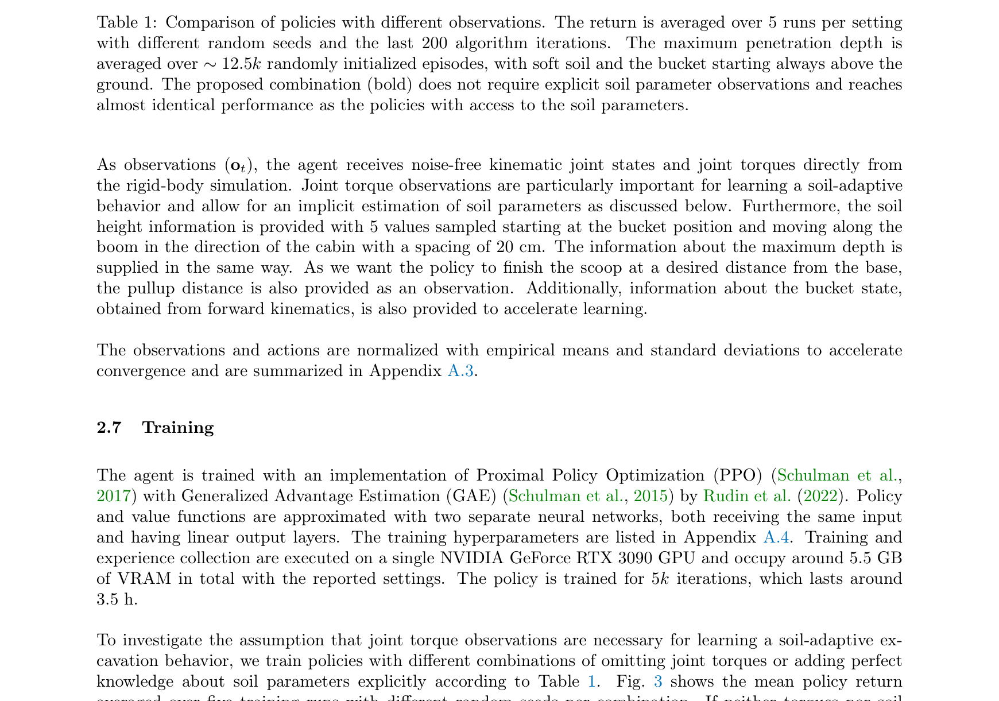
원문 Table 1 · PDF p.13 — Table 1: Comparison of policies with different observations. The return is averaged over 5 runs per setting with different random seeds and the last 200 algorithm iterations. The maximum penetration depth is averaged over ∼12.5k randomly initialized episodes, with soft soil and the bucket starting always above the ground. The proposed combination (bold) does not require explicit soil parameter observations and reaches almost identical performance as the policies with access to the soil parameters.
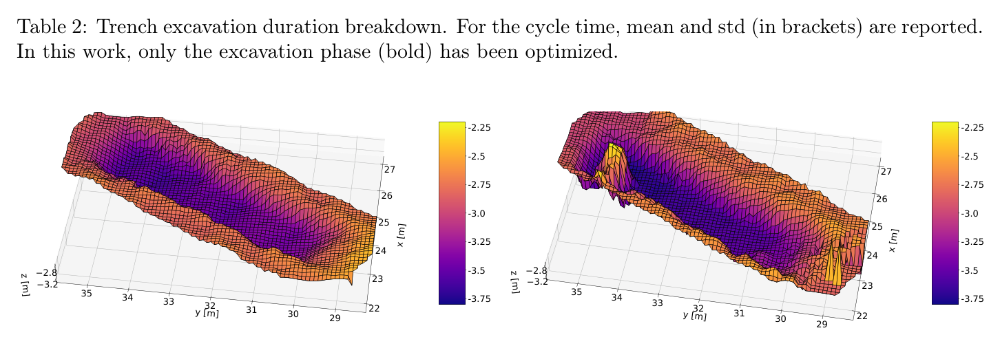
원문 Table 2 · PDF p.22 — Table 2: Trench excavation duration breakdown. For the cycle time, mean and std (in brackets) are reported. In this work, only the excavation phase (bold) has been optimized.
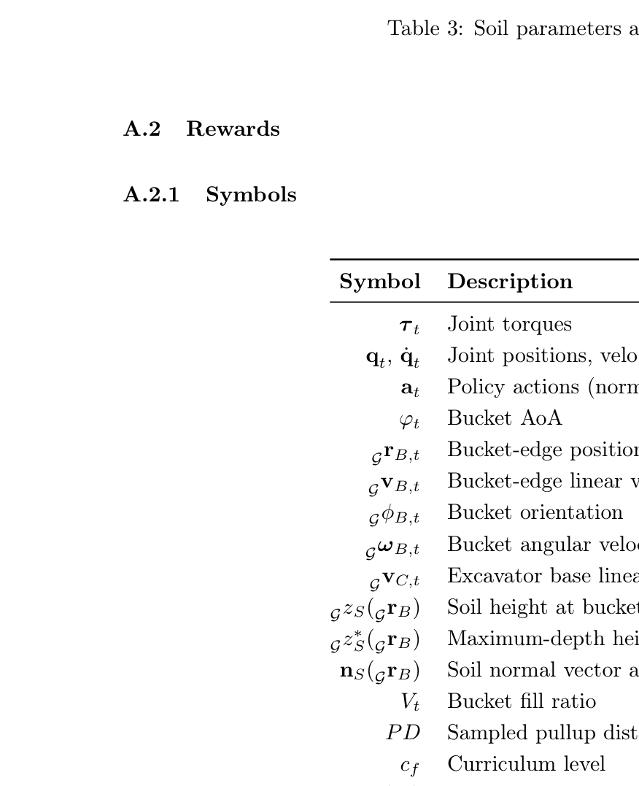
원문 Table 3 · PDF p.30 — Table 3: Soil parameters and randomization ranges.
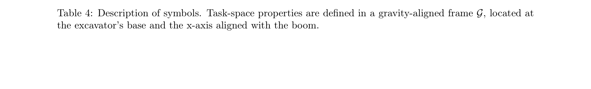
원문 Table 4 · PDF p.30 — Table 4: Description of symbols. Task-space properties are defined in a gravity-aligned frame G, located at the excavator’s base and the x-axis aligned with the boom.
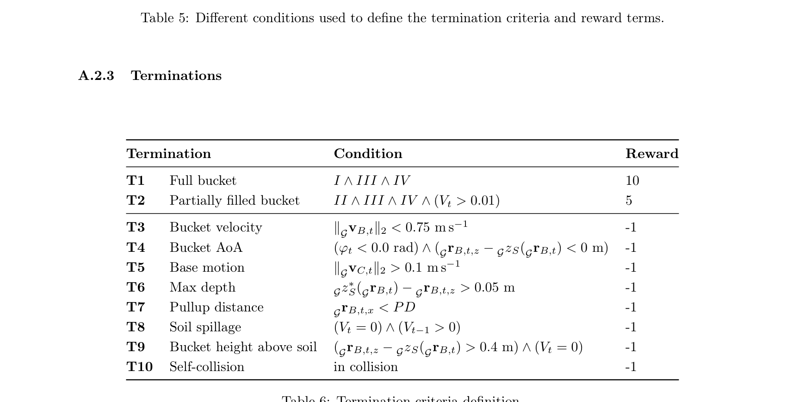
원문 Table 5 · PDF p.31 — Table 5: Different conditions used to define the termination criteria and reward terms.
원문 Table 8 · PDF p.32 — Table 8: Linearly interpolated environment parameters according to the curriculum factor cf, where NT is the total number of episodes terminated, and NT 1, NT 2 are the number of episodes terminated with criteria T1 and T2, respectively.
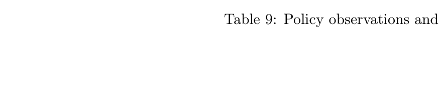
원문 Table 9 · PDF p.32 — Table 9: Policy observations and actions. Dimension in brackets.
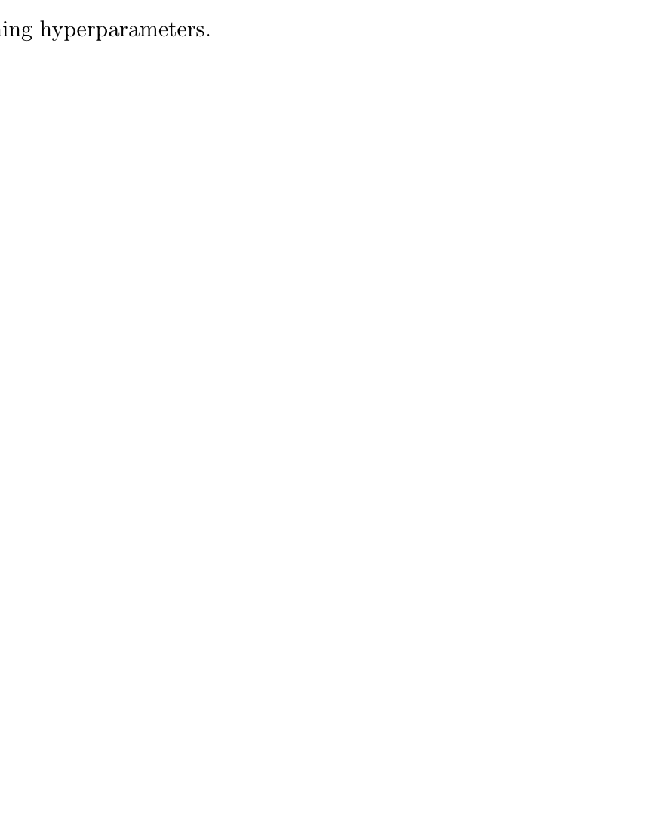
원문 Table 10 · PDF p.33 — Table 10: PPO training hyperparameters.